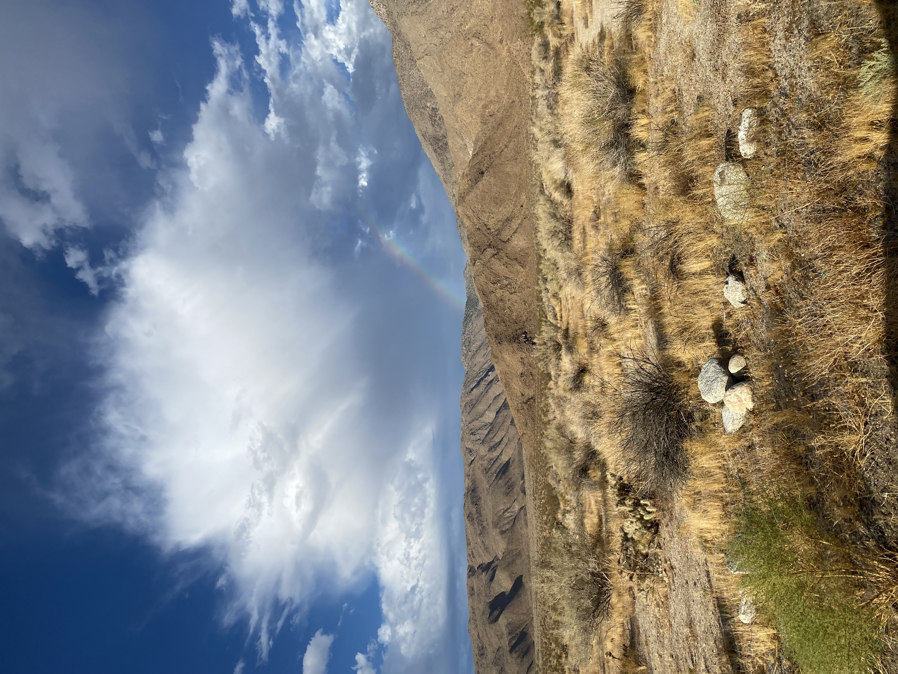

Open to collaboration on biodiversity monitoring, bioacoustics, and conservation programs — and available for talks and consulting across North Africa and beyond.
bouragaoui@wisc.edu
in/zakher-bouragaoui
Based in
Tunis, Tunisia
Start an email about…
